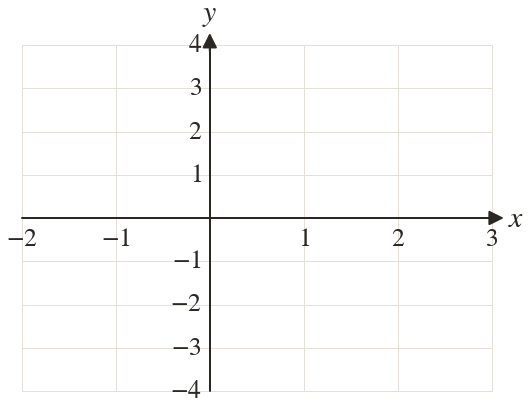
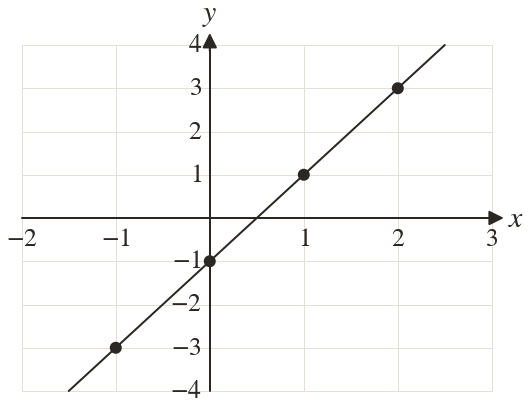

Westonbirt Maths · Linear Graphs and y = mx + c
Tables of Values
Name: ______________________ Date: ____________
1
Complete a table of values for using
2
Complete a table of values for using
3
Complete a table of values for using
4
Complete a table for using
Plot the points and draw the line.
Plot the points and draw the line.
5
Ola's table for gives when
What is wrong?
What is wrong?
Ext
In a table for when
Find a, then find when
Find a, then find when

